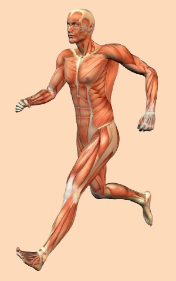

Los músculos son tejidos contráctiles en el cuerpo humano que cumplen diversas funciones esenciales. Algunas de las más importantes son:
- Movimiento: Los músculos permiten que el cuerpo se mueva. Cuando los músculos se contraen, generan fuerza que se transmite a través de los huesos y las articulaciones lo que permite el movimiento de las extremidades y otras partes del cuerpo.
- Mantener la postura y la posición: Los músculos trabajan en conjunto para mantener la postura y la posición del cuerpo en reposo o durante actividades como estar de pie o sentado.
- Estabilidad articular: También brindan estabilidad a las articulaciones. Los músculos que rodean una articulación la sostienen y evitan que se mueva en direcciones no deseadas.
- Protección y soporte de órganos internos: Algunos músculos ayudan a proteger y soportar los órganos internos alrededor del abdomen y el torso.
- Regulación de la temperatura corporal: Los músculos generan calor cuando se contraen, lo que es esencial para mantener la temperatura corporal adecuada. Los temblores musculares pueden ayudar a generar calor cuando el cuerpo está expuesto al frío.
- Circulación sanguínea: Los músculos cardíacos, que forman el corazón, son responsables de bombear la sangre a través del sistema circulatorio para distribuir oxígeno y nutrientes a todas las células del cuerpo.
- Función metabólica: Los músculos esqueléticos también juegan un papel en el metabolismo, ya que consumen energía en forma de calorías durante la actividad física y en reposo.
- Respiración: Los músculos intercostales y el diafragma son cruciales para la expansión y contracción de los pulmones durante la respiración.
- Expulsión de desechos y digestión: Los músculos lisos en el tracto gastrointestinal y otros órganos internos ayudan a mover los alimentos y los desechos a través del sistema digestivo.
- Expresión facial y comunicación: Los músculos faciales permiten una amplia gama de expresiones faciales que son esenciales para la comunicación no verbal y la expresión de emociones.

Imagen disponible en Pinterest